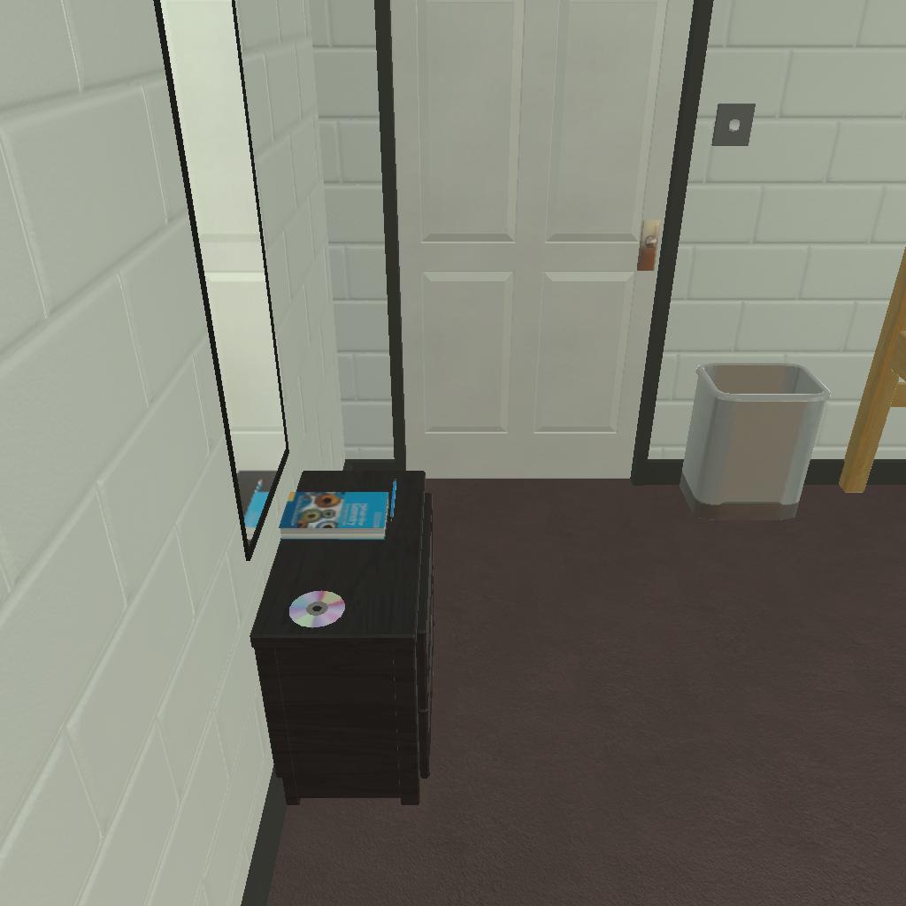
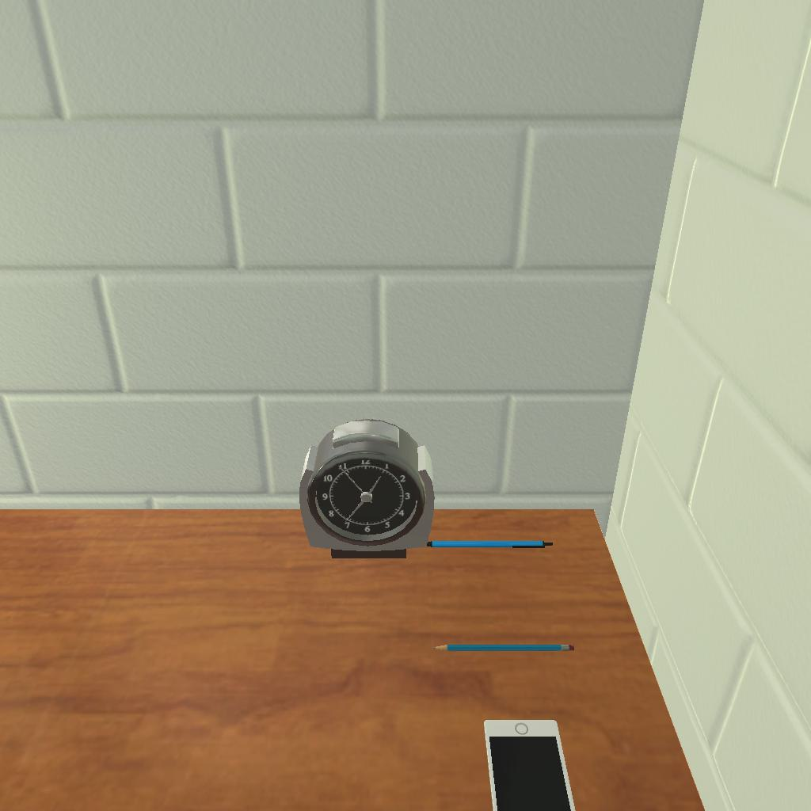

---------------------------------------------------------task: 8---------------------------------------------------------
--------------------------------------------------------------------------------------------------------------------------------------------------------------------
--------------------------------------------------------------------------------------------------------------------------------------------------------------------
Step:--------------------------------------------------------------------------2-------------------------------------------------------------------------------
----------------------------------------
VLM Prompt:
Image1:
Image2:
**Instruction**
1. Analyze the provided images to identify all visible household objects and compare the difference between images (e.h. whether the object is opened or not and taken on hand or not), focusing on those relevant to the task description "put a laptop in desk."
2. Use the analysis of images and the task hint "The agent must find an object of the desired type, pick it up, find the correct location to place it, and put it down there." to answer the question: what is the most reasonable action in the choices for the task description "put a laptop in desk"?
3. Decide and write the answer using the template: The answer is: (i): , where i is the real number. If there is no desired object in images, search every place based on **Initial Observation** to find the object. And if no one is exactly correct, choose a similar answer.
**Initial Observation**
You are in the middle of a room. Looking quickly around you, you can see bed (1), garbagecan (1), desk (1), sidetable (1), drawer (1-5), laundryhamper (1)
**Answer Choices**
(1): go to bed 1
(2): go to garbagecan 1
(3): go to sidetable 1
(4): go to drawer 1
(5): go to drawer 2
(6): go to laundryhamper 1
(7): go to drawer 3
(8): go to drawer 4
(9): go to drawer 5
(10): take alarmclock 1 from desk 1
(11): take cellphone 1 from desk 1
(12): take pencil 1 from desk 1
(13): take pen 1 from desk 1
(14): examine desk 1
**Answer**
Let's think step by step by following the instructions.
----------------------------------------
----------------------------------------
Original Response:
Image Analysis:
Image 1 shows a room corner with a sidetable, a mirror, a door, and a trash can. On the sidetable, there is a magazine or brochure with a dog on the cover and a CD or DVD disc.
Image 2 shows a desk with an alarm clock, a cellphone, a pencil, and a pen on it.
Comparison:
Both images do not show any laptop; hence, no laptop is opened or taken in hand.
Task Analysis:
The task description is "put a laptop in desk." Since no laptop is visible in either of the images, we must search every place based on the Initial Observation to find the object.
Answer Choices Analysis:
The answer choices list several locations and objects, but none of them mention a laptop. The closest relevant action to the task would be to examine the desk, as it is the place where we would eventually want to put the laptop once found.
The answer is: (14): examine desk 1
----------------------------------------
----------------------------------------
>>> Refine Original VLM Response and Get Pure Action: examine desk 1
----------------------------------------
-----------------------------------------------------------------
Running time: 10.331068754196167 seconds
Total Money: 3.0753800000000013
-----------------------------------------------------------------
-----------------------------------------------------------------
Text Observation:On the desk 1, you see a alarmclock 1, a cellphone 1, a pencil 1, and a pen 1.
-----------------------------------------------------------------
UNSUCCEED